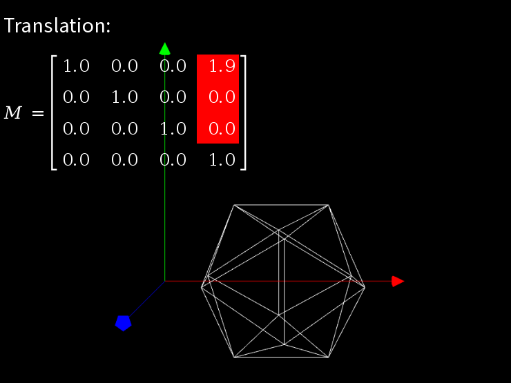
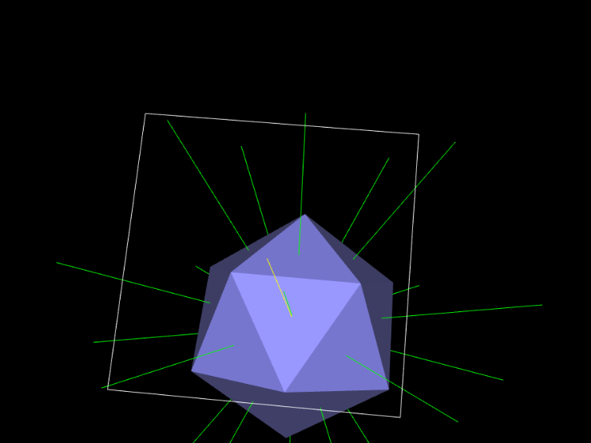
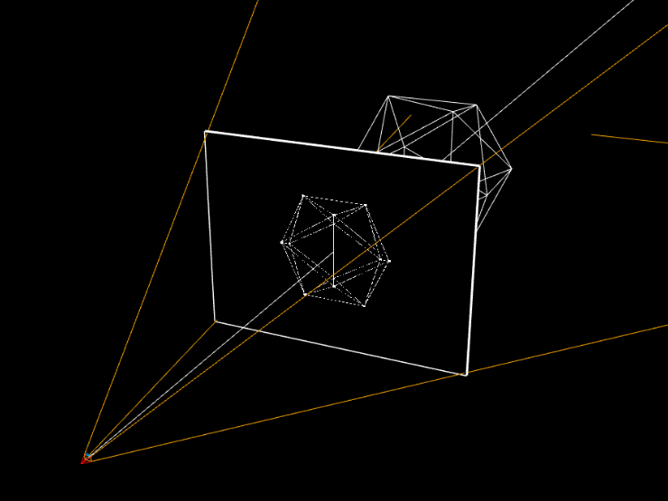
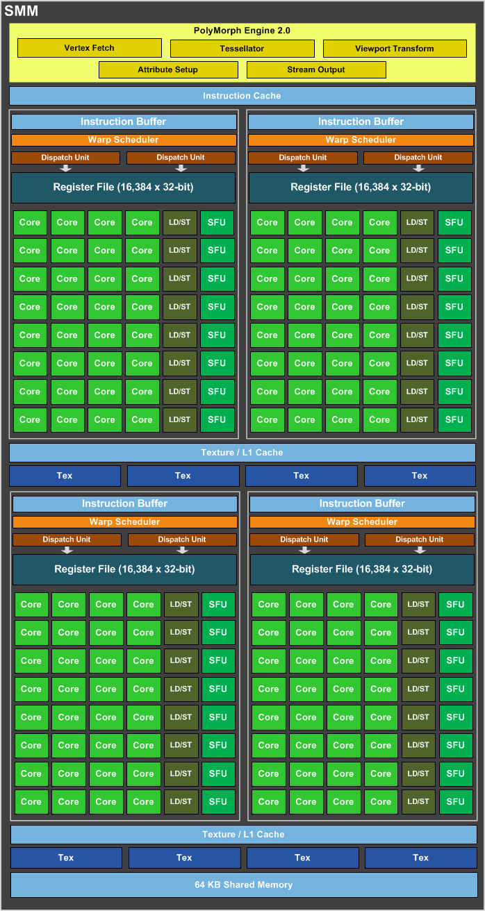

Introduction to GPUs
And the Free Software Graphics Stack
Alexandre Courbot
Highlight
- How 3D graphics are rendered
- How GPUs accelerate 3D rendering
- How the OSS stack exposes GPUs
Scope
- Real-time polygon-based rendering
- 3D rendering part of graphics hardware
- NVIDIA hardware and Nouveau driver used as reference
Limits of this Talk
An overview of how 3D graphics are rendered and accelerated
- Basic idea of 3D rendering and GPUs design
- Many details will be omitted
- Simplicity over accuracy
Identity matrix:
Translation:
Rotation:
Scaling:
Combination:
Omissions
- Local, world, camera coordinates
- Culling
- Clipping
- Tessellation
- Modern lighting techniques
- Perspective correction
- Projection matrix
- Skeletal animation
- Z-buffer
- Stencil buffer
- Texture perspective correction
- Texture filtering
- Transparency
- Shadows
- Bump mapping
- Multi-pass rendering
- Tiled rendering
- …
Simplified 3D Rendering Pipeline
3D Geometry + Attributes
↓
| Transform |
Lighting |
Project |
|
|  |
 |
 |
↓
2D Geometry + Attributes
↓
↓
Operations Involved in the 3D Pipeline
- Transform, Lighting, Project:
- Matrix & floating point operations
- Raster, fragment shading:
- Interpolation, memory accesses
The CPU can perform these operations, but:
- No or few parallelization
- CPUs were weak at floating-point operations
- Rendering is only part of the CPU workload!
Hardware Acceleration of 3D Rendering
From 2D to 3D Accelerators
First generations of 3D accelerators (1996)
Omissions (again...)
- Perspective correction
- Lighting
- Face color
- Transparency
- Antialiasing
- Fog
- …
3D Geometry + Attributes
↓
| Transform |
Lighting |
Project |
|
|
|
|
↓
2D Geometry + Attributes
↓
↓
Hardware Accelerated
Acceleration of Geometry Processing
Dedicated parallel units that accelerate geometry and lighting processing.
GeForce256: "The world first Graphics Processing Unit" (1999)
3D Geometry + Attributes
↓
| Transform |
Lighting |
Project |
|
|
|
|
↓
2D Geometry + Attributes
↓
↓
Hardware Accelerated
Hardware Accelerated
Limitations of Second-Generation GPUs
Accelerators that perform two very different things:
- Fast, parallel floating-point operations
- Fast parameterized texture mapping
Extreme workloads result in sub-optimal silicon usage
Fixed Pipeline
- Lighting limited to a few models
- Fragment shading limited to color + light + texture + ...
- More complex shading needs to be delegated to the CPU!
Programmable Pipeline (2001)
Both vertex and fragment processing units become capable of running user-defined parallel programs (shaders)
3D Geometry
↓
| Transform |
Lighting |
Project |
|
|
|
|
↓
2D Geometry + Attributes
↓
↓
← Vertex shader
← Fragment shader
Limitations of Second-Generation GPUs
Accelerators that perform two very different things:
- Fast, parallel floating-point operations
- Fast parameterized texture mapping
Extreme workloads result in sub-optimal silicon usage
Fixed Pipeline
Lighting limited to a few modelsFragment shading limited to color + light + texture + fog + ...More complex shading needs delegation to the CPU!
Unified Shaders (2006)
- Units responsible for vertex and fragment shading merged
- The 3D pipeline becomes a logical pipeline
- Better use of silicon during extreme workloads
- GPU becomes General-Purpose: CUDA, OpenCL

Geforce GTX 980: 2048 CUDA cores
Virtualization of GPU hardware
GPU contexts provided by channels
- Virtual memory address space
- Engines states
- Hardware scheduler
- Pushbuffer specifies sequence of values to write into GPU registers
- Programming the GPU becomes invoking "methods" on "objects" (no kidding!)
libdrm app example
Use the 2D engine to render a green rectangle on the framebuffer from (100, 100) to (150, 150)
Open device
fd = open("/dev/dri/renderD128", O_RDWR | O_CLOEXEC);
nouveau_device_wrap(fd, 0, &device);
nouveau_client_new(device, &client);
Allocate framebuffer
nouveau_bo_new(device, NOUVEAU_BO_VRAM, 4096,
width * 4 * height, NULL, &fb);
Allocate channel
nouveau_object_new(&device->object, 0, NOUVEAU_FIFO_CHANNEL_CLASS,
&data, size, &channel);
Allocate 2D object
nouveau_object_new(channel, 0xbeef902d, NVC0_2D_CLASS, NULL, 0, &twod);
Allocate pushbuffer
nouveau_pushbuf_new(client, channel, 2, 4096, true, &pushbuf);
Set object
BEGIN_INCR(pushbuf, 1, SET_OBJECT);
DATA(pushbuf, twod->oclass);
Set destination properties
BEGIN_INCR(pushbuf, 5, DST_PITCH);
DATA(pushbuf, 4 * width); /* DST_PITCH */
DATA(pushbuf, width); /* DST_WIDTH */
DATA(pushbuf, height); /* DST_HEIGHT */
DATA(pushbuf, fb->offset >> 32); /* DST_OFFSETUPPER */
DATA(pushbuf, (uint32_t)fb->offset); /* DST_OFFSETLOWER */
Set operation
BEGIN_INCR(pushbuf, 3, RENDER_SOLID_PRIM_MODE);
DATA(pushbuf, 0x4); /* Rectangle */
DATA(pushbuf, 0xd5); /* COLOR_FORMAT (A8B8G8R8) */
DATA(pushbuf, 0x0000ff00); /* COLOR */
Set draw coordinates
BEGIN_NONINCR(pushbuf, 2, RENDER_SOLID_PRIM_POINTXY);
DATA(pushbuf, 100 | (100 << 16)); /* x | (y << 16) */
DATA(pushbuf, 150 | (150 << 16)); /* x | (y << 16) */
Kick the pushbuffer
nouveau_pushbuf_kick(pushbuf, pushbuf->channel);
Omissions
- List of buffers used by graphics job
- Synchronization
- 3D workloads involve more buffers (compiled shaders, ...) and more complex pushbuffers
More complex libraries like OpenGL build on this simple interface
- Complete API implementation
- State tracking
- Shaders compilers
- …